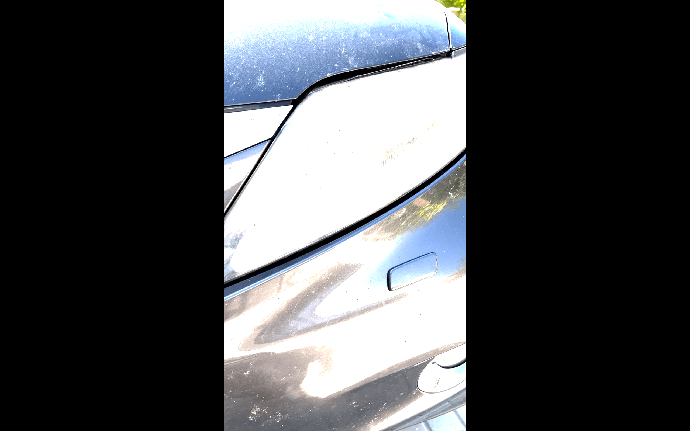

Faruri matuite sau îngălbenite? Clare din nou.
Restaurăm claritatea și aspectul farurilor fără să le înlocuiești: șlefuire în trepte, polish și protecție UV, ca să nu se îngălbenească din nou.



De ce merită restaurare faruri
Vizibilitate mai bună
Lumina trece din nou prin far, cum trebuie.
Mașina arată mai tânără
Farurile îngălbenite îmbătrânesc orice mașină.
Fără înlocuire
Mult mai avantajos decât faruri noi.
Protecție UV
Strat final care previne reoxidarea în timp.
Diferența se vede. Trage de slider.
Același far, înainte și după restaurare, în atelierul nostru din Gottlob.
Cum lucrăm
Nu un spray rapid, ci un proces în trepte.
- 1
Protejare
Acoperim zonele din jurul farurilor pentru protecție.
- 2
Șlefuire în trepte
Șlefuim cu hârtie abrazivă de la granulație 600 sau 800 până la 2000 sau 3000, în funcție de cât de afectate sunt farurile, folosind apă pentru răcire și curățare.
- 3
Polish
După ce suprafața devine mat uniform, trecem la polish cu pastă abrazivă și pad de burete pe mașină rotativă, până când farul devine clar și lucios.
- 4
Protecție UV
La final aplicăm un strat de protecție UV (spray special sau coating lichid), pentru a preveni reoxidarea în timp.
Lucrări reale


Ce ne întreabă clienții
Nu e mai simplu să schimb farurile?
De cele mai multe ori restaurarea e mult mai avantajoasă decât faruri noi, iar rezultatul se vede imediat.
Se vor îngălbeni din nou?
La final aplicăm un strat de protecție UV (spray special sau coating lichid) tocmai pentru a preveni reoxidarea.
Merge la orice far?
Restaurarea rezolvă matuirea și îngălbenirea de pe exteriorul farului. Dacă problema e în interior (umezeală, reflector deteriorat), vă spunem sincer înainte.
Cât costă?
Trimiteți-ne o poză cu farurile pe WhatsApp și primiți o estimare.
Farurile tale au nevoie de ajutor? Trimite-ne o poză.
Revenim cu o estimare și o dată disponibilă.